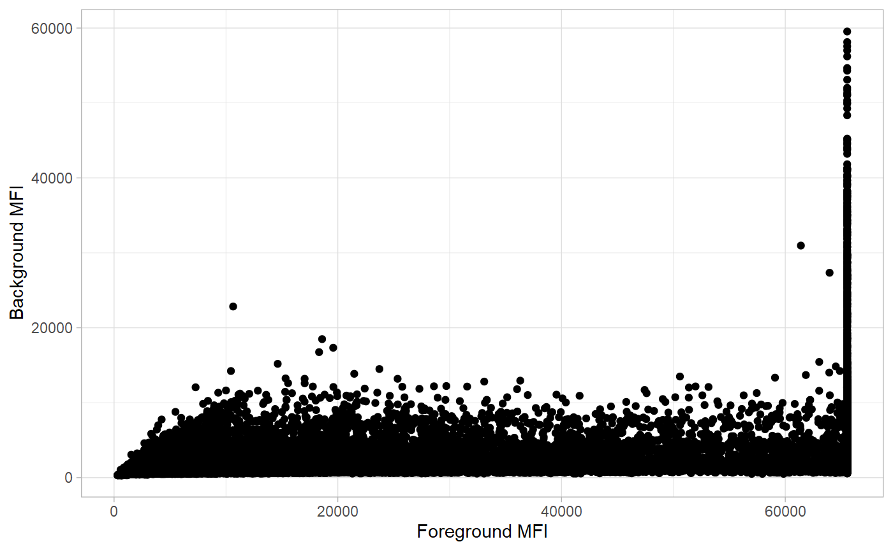
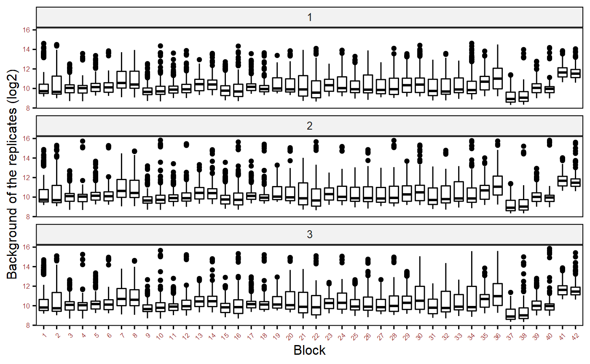
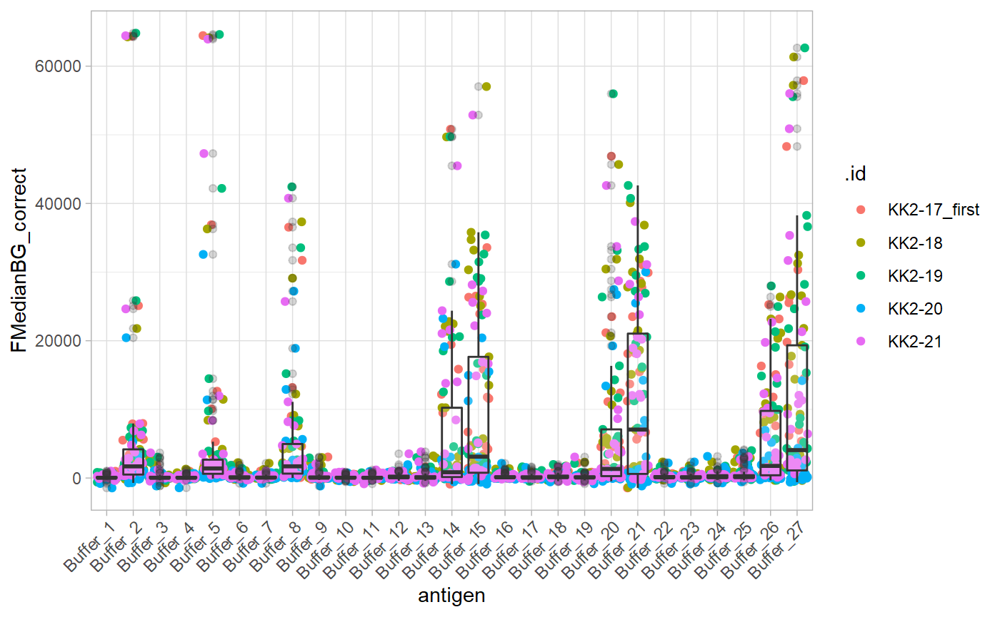
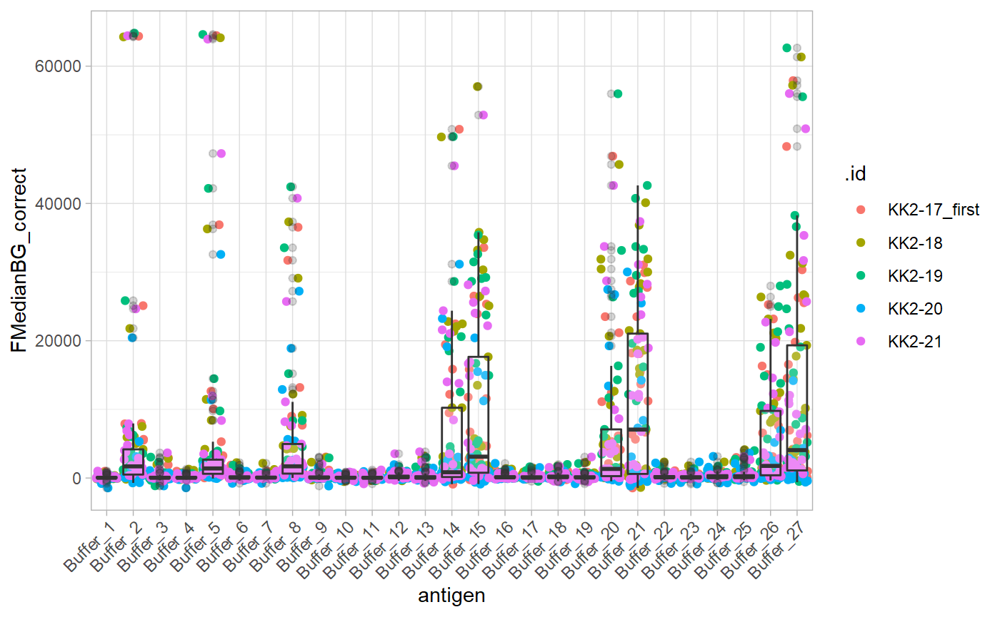
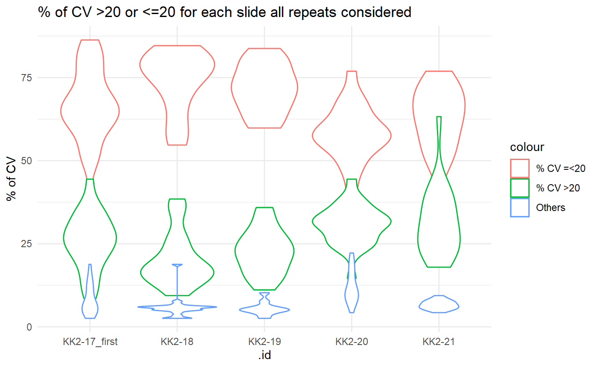
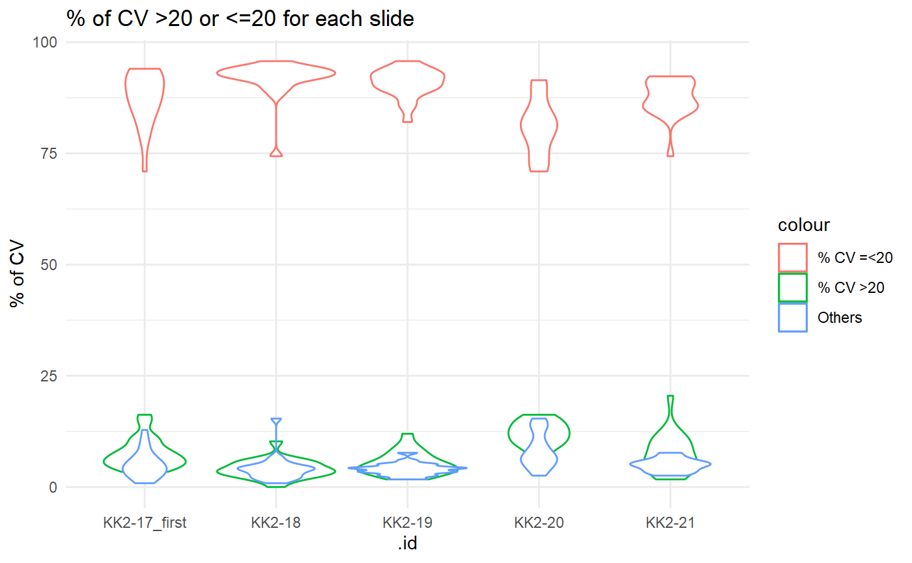
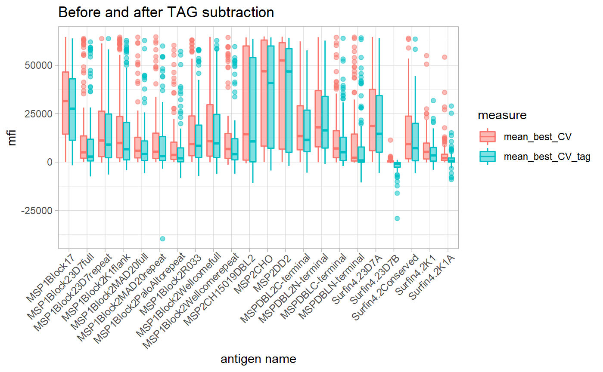
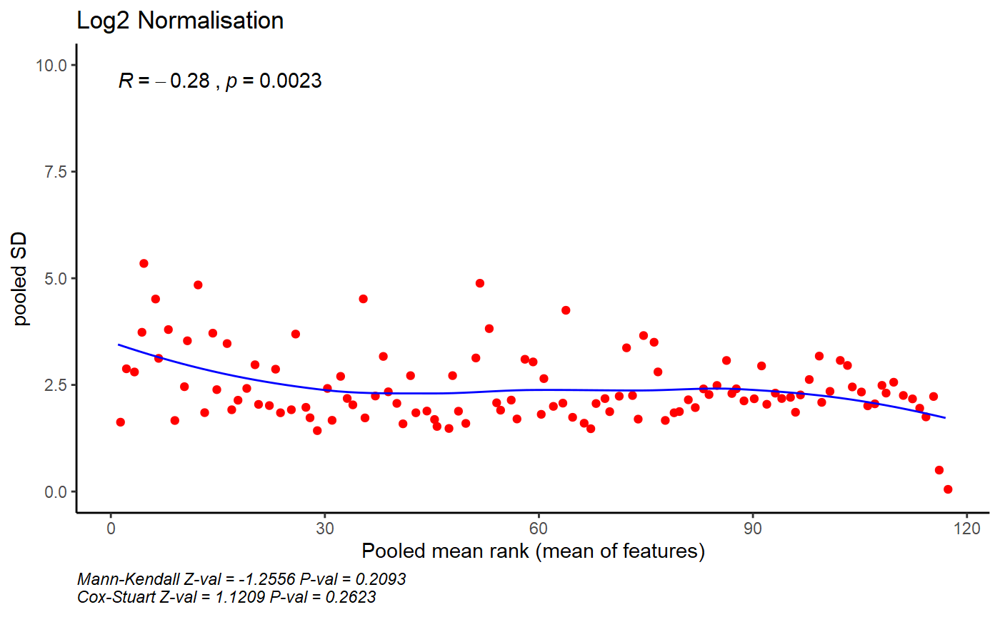
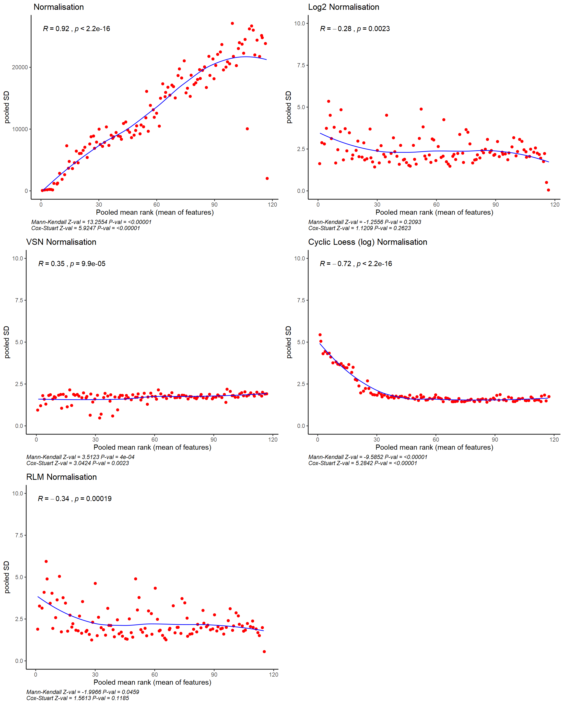

protGear:An R package with an interactive web-based protein microarray data processing suite
Kennedy Mwai
19 April, 2021
Source:vignettes/protGear_vignette.Rmd
protGear_vignette.RmdIntroduction
General information
protGear is a package for protein micro data processing just before the main analysis. The package loads the ‘gpr’ or ‘txt’ file format extracted by the quantification software and merges this with the specific sample identifiers. The package processes multiple files extracted in a batch with their corresponding sample identifier file. The sample identifier file has 2 variables ‘v1’ and ‘v2’ which indicate the mini-array or block number and sample identifier respectively. The ‘gpr’ file and the corresponding sample identifier file have the same file name. protGear also provides a web based \(Shiny^{(R)}\) platform for real time visualization of the data processing.
In this vignette the general work-flow of protGear will be outlined by processing a sample dataset from a multicentre study Plasmodium falciparum Merozoite Protein Microarray. The multicentre study design motivated the development of the protGear suite.
Analysis setup
Create 2 folders that hold the ‘.gpr’ files and the corresponding sample identifier files.

Folder structure of array and sample ID files
Installation
To install protGear run the following commands in R
## make sure devtools package is installed
devtools::install_github("keniajin/protGear", dependencies = TRUE)Package load and importing data
The first part is to specify the parameters of the micro-array experiment to assist in processing the data. The parameters specified are
- channel - The scanner fluorescence output used to record the data. It can be green,red,blue among others with a specified number.
- chip_path - the folder where the ‘gpr’ or ‘txt’ files are stored.
- totsamples - the number of samples in a slide or array.
- blockspersample - The number of blocks a sample it takes. In this example each sample occupies 2 blocks each with 384 spots.
- sampleID_path - the folder where the sample identifiers files are stored
- machine - The indicator for which machine was used to hybridize the samples if the experiment had more than one machine.
- date_process -the date of sample processing
The parameters “chip_path”, “channel” , “totsamples” and “sampleID_path” are mandatory.
## specify the the parameters to process the data
genepix_vars <- array_vars(
channel = "635",
chip_path = "data/array_data",
totsamples = 21,
blockspersample = 2,
sampleID_path = "data/array_sampleID/",
mig_prefix = "_first",
machine = 1,
date_process = "0520"
)The exact channel used should be checked in the header of the file from the quantification software under Wavelengths.
header_gpr <- readLines("data/array_data/machine1/KK2-06.txt",
n = 40
)
header_gpr <- gsub("\"", "", header_gpr[1:32])
header_gpr[1:32]## [1] "ATF\t1.0"
## [2] "30\t41 "
## [3] "Type=GenePix Export 3"
## [4] "DateTime=2017/08/29 13:33:07"
## [5] "Settings="
## [6] "GalFile=Z:\\Multicenter study\\gal file\\gal file_4`.gal"
## [7] "PixelSize=10"
## [8] "Wavelengths=635"
## [9] "ImageFiles=Z:\\Multicenter study\\28_08-2017\\datascan_28-8\\KK2-06.tif 0"
## [10] "NormalizationMethod=None"
## [11] "NormalizationFactors=1"
## [12] "JpegImage="
## [13] "StdDev=Type 1"
## [14] "RatioFormulations=W1/W2 (635/594)"
## [15] "FeatureType=Circular"
## [16] "Barcode="
## [17] "BackgroundSubtraction=LocalFeature"
## [18] "ImageOrigin=0, 0"
## [19] "JpegOrigin=1780, 820"
## [20] "Creator=GenePix Pro 7.3.0.0"
## [21] "Scanner=GenePix 4300 [141110]"
## [22] "FocusPosition=0"
## [23] "Temperature=0"
## [24] "LinesAveraged=1"
## [25] "Comment="
## [26] "PMTGain=400"
## [27] "ScanPower=100"
## [28] "LaserPower=0.66"
## [29] "Filters=Standard Red"
## [30] "ScanRegion=0,0,2200,7200"
## [31] "ScanArea=1"
## [32] "Supplier="The function check_sampleID_files() helps to check whether each micro array file has a corresponding sample identifier file. The sample identifier files are generated from the lab plate maps to match the corresponding samples on a specific slide.If the sample identifier file is missing, protGear automatically generates the id’s.
Import microarray data
Microarray data is imported using the read_array_files() function. The function accepts the following mandatory arguments;
-
filename- the name of the file which the data are to be read from. In this example a list of multiple files from a folder is used and passed to using purrr. -
data_path- The path where the file with the data is located -
genepix_vars- A list of specific definitions of the experiment design. See array_vars()
#### read in all the datasets
### list all the file names under data folder
filenames <- list.files(file.path(genepix_vars$paths[[2]]),
pattern = "*.txt$|*.gpr$", full.names = F
)
#' @___________________read_in_the_files_with_the_text_data_from_the_chip_____________________________
### read all the data files and save them in a list
data_path <- paste0(genepix_vars$paths[[2]], "/")
data_files <- purrr::map(
.x = filenames,
.f = read_array_files,
data_path = data_path,
genepix_vars = genepix_vars
)
data_files <- set_names(data_files, purrr::map(filenames, name_of_files))Background Correction
Background noise is caused by non-specific fluorescence such as auto-fluorescence of the glass slide or non-specific binding of parameters and reference substances. To cut down the effect of background noise we have included different approaches for background correction. First, we extract the background values, visualize and select the best background approach. We have implemented five different approaches;
- Local background subtraction
- Global background subtraction
- Moving minimum background subtraction
- Normal and exponential model (normexp)
- Log-linear background correction (Edwards)
In ‘.gpr’ files the Background column starts with a ‘B’ followed by the wavelength or channel. In order to perform background correction, we extract the background mean fluorescent intensities (MFI’s) using the function extract_bg() . The function accepts the arguments iden which is the file identifier, data_files a list of data objects with names utilised by iden and genepix_vars defined using array_vars() function. We utilise the purr::map function to extract the background MFI of multiple data files.
## utilising the map package we process a number of files under data_files list
dfs <- names(data_files)
allData_bg <- purrr::map(.x = dfs, .f = extract_bg, data_files = data_files, genepix_vars)
allData_bg <- set_names(allData_bg, purrr::map(filenames, name_of_files))
allData_bg <- plyr::ldply(allData_bg)Before selecting the best background correction approach the MFI signals are be inspected visually. In protGear we first utilise the function plot_FB() that graphs the background, BG_Median and foreground values, FBG_Median. On the protGear Shiny platform the visuals are interactive and you can identify the features or blocks with strong bias.
p1 <- plot_FB(allData_bg, antigen_name = "antigen", bg_MFI = "BG_Median", FG_MFI = "FBG_Median", log = F)
p2 <- plot_bg(
df = allData_bg, x_axis = "Block", bg_MFI = "BG_Median",
log_mfi = T
)
p1
p2
After background visualization and selecting the best approach the array data are merged with their specific sample identifier files. Each array file has its own corresponding sample identifier file. The method of background subtraction selected is also specified under method below. The background correction is performed by bg_correct() function.
Visualizing buffer spot
This is specific to experiment design if a specific buffer spot is included. This is used to check for unexpected scanning artefacts. The buffer spots should have similar values in different slides. Some outliers might be expected for buffer spots close sample spots or landmark.
buffer_transp <- purrr::map(.x = sample_ID_merged_dfs, .f = buffer_spots)
buffer_transp <- set_names(buffer_transp, purrr::map(filenames, name_of_files))
buffers <- plyr::ldply(buffer_transp)
plot_buffer(buffers, buffer_names = "antigen", buffer_mfi = "FMedianBG_correct", slide_id = ".id")
Coefficient of Variation (CV) calculation
To calculate the CV’s we utilise the cv_estimation() function with a cv_cut_off specified , sample identifier variable and antigen specified under sampleID_var and antigen respectively. The replicate_var and mfi_var identifies the variable with the replicate rank generated and MFI’s values.
#' @________________________________calculated_cv_for_each_data_file_______________________________________
#' data without the selected mean for the best 2 CVs
dataCV <- purrr::map(
.x = sample_ID_merged_dfs, .f = cv_estimation, lab_replicates = 3,
cv_cut_off = 20,
sampleID_var = "sampleID", antigen_var = "antigen", replicate_var = "replicate",
mfi_var = "FMedianBG_correct"
)
lab_replicates <- 3
dataCV <- set_names(dataCV, purrr::map(filenames, name_of_files))
aa <- plyr::ldply(dataCV)
GGally::ggpairs(aa, aes(color = cvCat_all),
columns = paste(1:lab_replicates), title = "", axisLabels = "show"
) +
theme_light()
Here we create a summary of the CV values for each sample/slide utilising the cv_by_sample_estimation() function. This helps to identify samples with high values of CV. On the protGear dashboard an interactive table is created to show the summary for each sample.
#' @________________________________summary_of_cv_for_each_sample________________________________________
#' creates summaries by cv's greater than 20 and less than 20
cv_cut_off <- 20
dataCV_sample <- purrr::map(
.x = dataCV, .f = protGear::cv_by_sample_estimation, cv_variable = "cvCat_all",
lab_replicates = 3
)
dataCV_sample <- set_names(dataCV_sample, purrr::map(filenames, name_of_files))
all_cv_sample <- plyr::ldply(dataCV_sample)
less_20 <- rlang::sym(paste0("CV <= ", cv_cut_off, "_perc"))
gt_20 <- rlang::sym(paste0("CV > ", cv_cut_off, "_perc"))
less_20_per <- rlang::sym(paste0("% CV <=", cv_cut_off))
gt_20_per <- rlang::sym(paste0("% CV >", cv_cut_off))
ggplot(all_cv_sample) +
geom_violin(aes(.id, `CV <= 20_perc`, color = "% CV =<20")) +
geom_violin(aes(.id, `CV > 20_perc`, color = "% CV >20")) +
geom_violin(aes(.id, Others_perc, color = "Others")) +
ylab("% of CV") +
theme_minimal() +
ggtitle("% of CV >20 or <=20 for each slide all repeats considered")
We have implemented a function best_CV_estimation() to select the best replicates if an experiment has more than 2 technical replicates. This helps to select the less variable replicates.
#' @________________________________data_with_selected_best_2_CV_______________________________________
#' data with the selected mean for the best 2 CVs
dataCV_best2 <- purrr::map(
.x = dataCV, .f = best_CV_estimation, slide_id = "iden", lab_replicates = 3,
cv_cut_off = 20
)
## give the names to the returned list
dataCV_best2 <- set_names(dataCV_best2, purrr::map(filenames, name_of_files))
dataCV_sample_best2 <- purrr::map(
.x = dataCV_best2, .f = cv_by_sample_estimation,
cv_variable = "best_CV_cat", lab_replicates = 3
)
dataCV_sample_best2 <- set_names(dataCV_sample_best2, purrr::map(filenames, name_of_files))
all_cv_sample_best2 <- plyr::ldply(dataCV_sample_best2)On the violin below we observe that with selecting the less variable replicates , the percentage of the “good CV” values increases.
## plot only the CV perccentages
ggplot(all_cv_sample_best2) +
geom_violin(aes(.id, `CV <= 20_perc`, color = "% CV =<20")) +
geom_violin(aes(.id, `CV > 20_perc`, color = "% CV >20")) +
geom_violin(aes(.id, Others_perc, color = "Others")) +
ylab("% of CV") +
theme_minimal() +
ggtitle("% of CV >20 or <=20 for each slide")
Subtract the tag values
tag_file <- read.csv("TAG_antigens.csv")
tag_antigens <- c("CD4TAG", "GST", "MBP")
batch_vars <- list(machine = "m1", day = "0520")Tag subtraction is applied for antigens containing purification tags. A file with the specific TAG name for each antigen is loaded. The file has the antigen,TAG and TAG_name and the TAG_name must be part of the antigens listed.
tb1 <- data.frame(head(tag_file, n = 10))
tb1 %>%
kable() %>%
kable_styling()| antigen | TAG | TAG_name |
|---|---|---|
| AARP | 0 | CD4TAG |
| AMA1 | 0 | CD4TAG |
| ASP | 0 | CD4TAG |
| CD4TAG | 99 | NO_TAG |
| CLAG3.2 | 0 | CD4TAG |
| EBA140 | 0 | CD4TAG |
| EBA175 | 0 | CD4TAG |
| EBA181 | 0 | CD4TAG |
| ETRAMP10.2 | 0 | CD4TAG |
| GAMA | 0 | CD4TAG |
The function tag_subtract() implements the TAG subtration by matching the TAG names with the corresponding TAG values.
#' @________________________________subtract_the_tag_values_______________________________________
#'
## tag subtract
## read in the KILCHip TAG file to substract GST-1, MBP -2 and CD4TAG - 0 file
dataCV_tag <- purrr::map(
.x = dataCV_best2, .f = tag_subtract,
tag_antigens = tag_antigens, mean_best_CV_var = "mean_best_CV", tag_file = tag_file,
antigen_var = "antigen",
batch_vars = batch_vars
)
dataCV_tag <- set_names(dataCV_tag, purrr::map(filenames, name_of_files))
dataCV_tag <- plyr::ldply(dataCV_tag)In this example here we plot a graph of antigens Tagged with GST before and after TAG subtration.
aaa <- dataCV_tag %>%
filter(TAG_name == "GST")
aaa <- aaa %>%
dplyr::select(.id, sampleID, antigen, mean_best_CV, mean_best_CV_tag)
aaa <- aaa %>%
gather(measure, mfi, -c(.id:antigen))
ggplot(aaa, aes(as.factor(antigen), mfi, color = measure)) +
geom_boxplot(aes(fill = measure), alpha = 0.5) +
theme_light() +
xlab("antigen name") +
ggtitle("Before and after TAG subtraction") +
theme(axis.text.x = element_text(angle = 45, hjust = 1))
Normalisation
To normalise the data, we create a matrix matrix_antigen with all the data combined. We ensure the slide identifier is included as row names of the matrix or we have a way to join them after normalisation. The array_matrix matrix is used to hold these parameters. We have implemented four different normalisation techniques;
- \(Log_2\) normalisation
- Loess normalisation
- RLM normalisation
- VSN normalisation.
df_to_normalise <- dataCV_tag %>%
ungroup() %>%
select(slide = .id, sampleID, sample_array_ID, antigen, mean_best_CV) %>%
group_by(sampleID, slide)
df_to_normalise$sample_index <- group_indices(.data = df_to_normalise)
###
to_normalise <- df_to_normalise %>%
ungroup() %>%
select(-slide, -sampleID, -sample_array_ID) %>%
select(antigen, sample_index, everything()) %>%
gather(variable, value, -(antigen:sample_index)) %>%
unite(temp, antigen) %>%
select(-variable) %>%
spread(temp, value) %>%
as.data.frame(.)
### get the row names of the machine data
row.names(to_normalise) <- to_normalise$sample_index
# batch_all <- as.factor(paste0(to_normalise$machine,"/",to_normalise$day))
# machines <- as.factor(to_normalise$machine)
# day_batches <- as.factor(to_normalise$day)
## create the matrix to normalise
matrix_antigen <- to_normalise %>%
select(-sample_index) %>%
as.matrix(.)
## create the matix to hold the important parameters
array_matrix <- df_to_normalise %>%
filter(antigen == "AMA1") %>%
ungroup() %>%
select(sample_array_ID, sample_index, slide)
control_antigens <- c("CommercialHumanIgG", "CD4TAG")The matrix_normalise() function is used to normalise the data and returns a list of plots and a matrix of normalised values. A plot is returned if return_plot = T otherwise only a matrix of normalised values will be returned.
normlise_df <- matrix_normalise(matrix_antigen,
method = "log2", array_matrix = array_matrix,
return_plot = T, control_antigens = control_antigens
)
normlise_df$plot_normalisation
On the dashboard we compare the different normalisation techniques using the mutiple_plot() function after loading the data.
control_antigens <- c("CommercialHumanIgG", "CD4TAG")
## no normalisation
normalise_list_none <- matrix_normalise(
matrix_antigen = matrix_antigen,
method = "none",
array_matrix = array_matrix,
return_plot = T,
control_antigens = control_antigens
)
names(normalise_list_none) <- c("matrix_antigen_none", "plot_none")
## log2 normalisation
normalise_list_log <- matrix_normalise(
matrix_antigen = matrix_antigen,
method = "log2",
array_matrix = array_matrix,
return_plot = T,
control_antigens = control_antigens
)
names(normalise_list_log) <- c("matrix_antigen_log", "plot_log")
## vsn normalisation
normalise_list_vsn <- matrix_normalise(
matrix_antigen = matrix_antigen,
method = "vsn",
array_matrix = array_matrix,
return_plot = T,
control_antigens = control_antigens
)
names(normalise_list_vsn) <- c("matrix_antigen_vsn", "plot_vsn")
## cyclic loess with log
normalise_list_cyclic_loess_log <- matrix_normalise(
matrix_antigen = matrix_antigen,
method = "cyclic_loess_log",
array_matrix = array_matrix,
return_plot = T,
control_antigens = control_antigens
)
names(normalise_list_cyclic_loess_log) <- c(
"matrix_antigen_cyclic_loess_log",
"plot_cyclic_loess_log"
)
normalise_list_rlm <- matrix_normalise(
matrix_antigen = matrix_antigen,
method = "rlm",
array_matrix = array_matrix,
return_plot = T,
control_antigens = control_antigens
)
names(normalise_list_rlm) <- c("matrix_antigen_rlm", "plot_rlm")
## create a list after normalisation
normalised_list <- c(
normalise_list_none,
normalise_list_log,
normalise_list_vsn,
normalise_list_cyclic_loess_log,
normalise_list_rlm
)
##
normalised_list_plot <- normalised_list[grepl("plot", names(normalised_list))]
Heatmap of the normalised data
norm_df <- normlise_df$matrix_antigen_normalised
p3 <- pheatmap::pheatmap(norm_df,
scale = "none", cluster_rows = F,
main = paste("VSN", "Normalised Data"),
silent = T
)
p3 <- ggplotify::as.ggplot(p3)
p <- p3 + theme_void()
p
PCA analysis
norm_df <- normlise_df$matrix_antigen_normalised
res_pca <- prcomp(norm_df, scale = TRUE)
var <- get_pca_var(res_pca)
vars_visualise <- 20
# Visualize the PCA
## individuals contributing to the PCA
p1 <- fviz_pca_ind(res_pca,
col.var = "contrib", # Color by contributions to the PC
gradient.cols = c("#00AFBB", "#E7B800", "#FC4E07"),
repel = TRUE # Avoid text overlapping
) + theme_minimal()
# Select the top vars_visualise contributing variables
p2 <- fviz_pca_biplot(res_pca,
label = "var",
select.var = list(contrib = vars_visualise)
) +
theme_minimal()
# Total cos2 of variables on Dim.1 and Dim.2
p3 <- fviz_cos2(res_pca, choice = "var", axes = 1:2, top = vars_visualise)
# Color by cos2 values: quality on the factor map
p4 <- fviz_pca_var(res_pca,
col.var = "cos2",
gradient.cols = c("#00AFBB", "#E7B800", "#FC4E07"),
select.var = list(contrib = vars_visualise),
repel = TRUE # Avoid text overlapping
)
## combine the plots into one grid
p <- gridExtra::grid.arrange(p1, p2, p3, p4, ncol = 2)
p## TableGrob (2 x 2) "arrange": 4 grobs
## z cells name grob
## 1 1 (1-1,1-1) arrange gtable[layout]
## 2 2 (1-1,2-2) arrange gtable[layout]
## 3 3 (2-2,1-1) arrange gtable[layout]
## 4 4 (2-2,2-2) arrange gtable[layout]Shiny application
Shiny is an R package that makes it easy to build interactive web apps straight from R. protGear has a built in user-friendly Shiny® dashboard to assist in real-time processing and visualization. It provides five sequential steps for handling a data table of fluorescent intensities. The dashboard is launched as below from R or RStudio. To Install R: Open an internet browser and go to www.r-project.org.
protGear::launch_protGear_interactive()